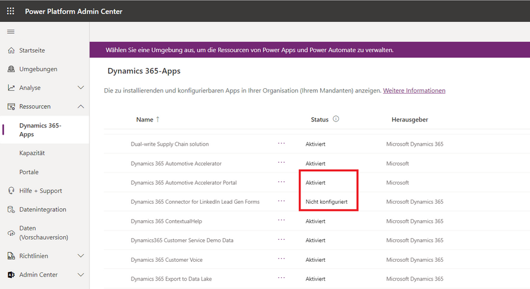

I- Gehen Sie folgendermaßen vor, um eine Liste aller lizenzierten Anwendungen für Ihren Mandanten anzuzeigen:
1. Melden Sie sich beim Microsoft Power Platform Admin Center an.
2. Sie aus dem linken Menü Ressourcen > Dynamics 365-Apps aus.
Durch diese Aktion wird eine Liste der verfügbaren Dynamics 365-Apps in Ihrem Mandanten angezeigt.
Doppelte Elemente werden unter Name angezeigt, wenn Sie dieselbe App-Lizenz auf mehrere Umgebungen angewendet haben.

Die unterschiedlichen Werte in der Spalte Status haben folgende Bedeutungen:
- Aktiviert – Die App kann nun in Ihren Umgebungen installiert werden.
- Konfiguriert – Die App wurde für eine Umgebung eingerichtet. Sie können die App erneut für eine andere Umgebung einrichten oder die Einrichtung für eine aktuelle Umgebung aktualisieren.
- Nicht konfiguriert – Die App kann jetzt für eine Umgebung eingerichtet werden.
3. Wenn sich Ihr Mandant in mehreren Ländern/Regionen befindet, können Sie das Gebietsschema mithilfe der Regionsauswahl ändern

II - Ansicht von Apps auf Umgebungsebene
Zusätzlich zur Mandantenebene können Sie Dynamics 365-Apps auf Umgebungsebene verwalten.


Um eine Liste aller lizenzierten Anwendungen in Ihrer Umgebung anzuzeigen, gehen Sie folgendermaßen vor:
1. Melden Sie sich beim Microsoft Power Platform Admin Center an.
2. Wählen Sie Umgebungen und dann die gewünschte Umgebung aus.
3. Wählen Sie Dynamics 365-Apps aus dem Bereich Ressourcen (im unteren rechten Teil des Bildschirms in der Umgebungsansicht).
Es wird eine Liste der in Ihrer Umgebung installierten Dynamics 365-Apps angezeigt.

4. Um mit einer App im Microsoft Power Platform Admin Center zu arbeiten, wählen Sie eine App aus und nutzen Sie das Befehlsleistenmenü oder die Option Weitere Anwendungsaktionen, um folgende Aufgaben auszuführen:- installieren – Administratoren können bestimmte Anwendungen in der ausgewählten Umgebung installieren, für die sie Berechtigungen haben. Nach Auswahl einer Umgebung wird eine Liste der zu installierenden Pakete angezeigt.
- öffnen – Mit dieser Option können Sie eine App aus dem kommerziellen Microsoft-Marketplace installieren.
- Update – Diese Option wird angezeigt, wenn ein Update für die App verfügbar ist. Wählen Sie sie aus, um das Paket zu aktualisieren.
- Details – Hier können Sie Basisinformationen zur App einsehen, einschließlich der Beschreibung, des Herausgebers und der Paketversion.